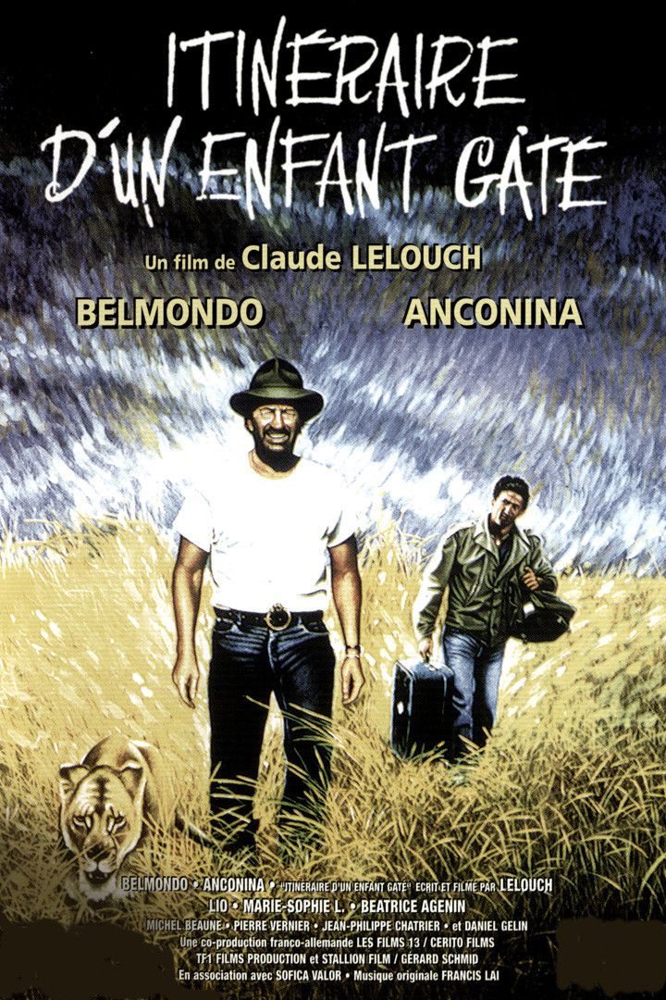
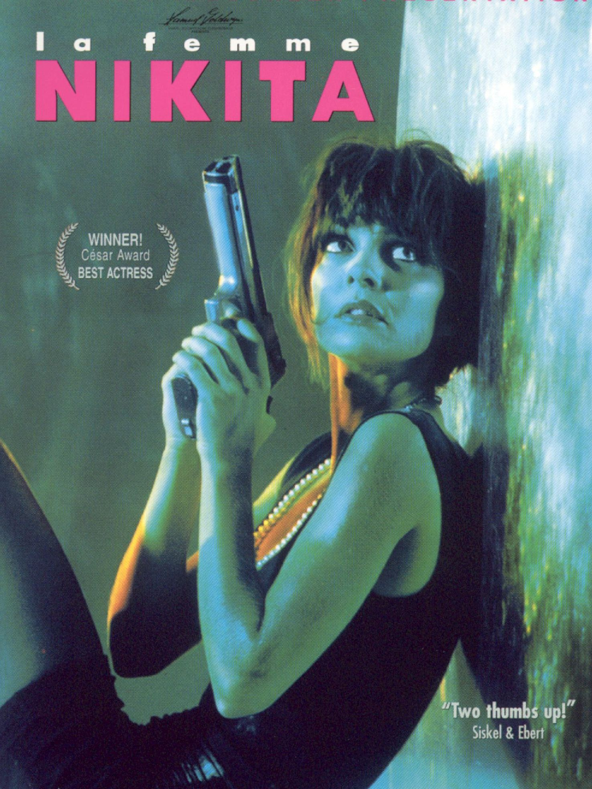

After 4 years getting bored in large industry, 4 more years in medium size industry, 4 years in consulting, I decided to create my own adventure linking common dream, high-tech and french industry which is lacking so much of a new way of thinking by creating Drawn.
Now becoming a programmer thanks to Le Wagon 😉 to make a full 4.0 equipment!
|  |
1988 - Itinéraire d'un enfant gâtéElevé dans un cirque, Sam Lion est devenu un homme d'affaires. Agé, il décide de se perdre à la mer, mais un ancien collègue lui montre la beauté de la vie. |
|  |
1990 - NikitaLe braquage d'une pharmacie par une bande de junkies en manque de drogue tourne mal : une fusillade cause la mort de plusieurs personnes dont un policier, abbatu par la jeune Nikita. Condamnée à la prison à perpétuité, celle-ci fait bientôt la rencontre de Bob, un homme mystérieux qui contraint la jeune femme à travailler secrètement pour le gouvernement. |